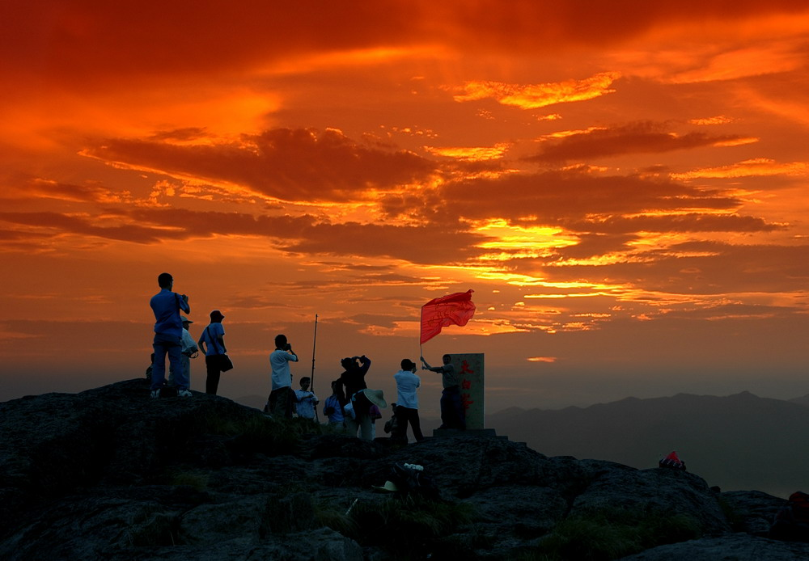
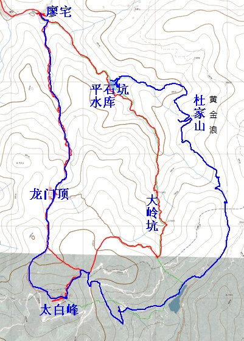
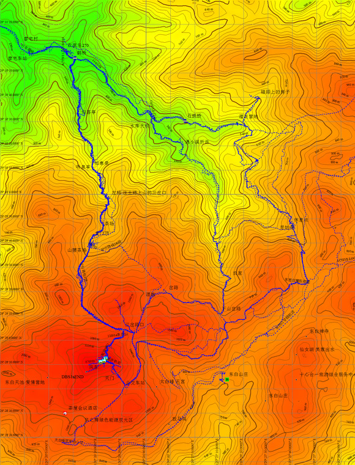

发信人: gxysina (平常心), 信区: outdoor
标 题: 野外生存协会十一月出行活动~东白山~
发信站: 饮水思源 (2012年11月04日00:06:19 星期天)
一.路线介绍
东白山位于东阳与诸暨的交界处，是当地的最高峰，地处会稽山脉南端，主峰太白峰
高1194.7米。从山脚小村庄沿小径蜿蜒而上，一路层林叠翠，古藤虬结，石桥，香榧古木
，令人陶然欲醉。尤其是东白山日出蔚为壮观。
山上还有一片独特的湖泊，当地人称它为“天池”，看起来有几分火山湖的味道。湿
度高的时候就会云雾缭绕，这里的云雾层次感很强，据说有些摄影朋友一守就是几天。云
雾散开之后还可以远眺东白湖。
活动时间：11月9日晚出发，11月11日晚回到学校
活动地点：诸暨东白山
活动类型：徒步&登山&摄影&篝火&日出
活动强度：中等偏下（上下山路程不长，平时有一定体育锻炼的同学皆可参加）
活动难度：中等偏下（上山基本无难度，下山可能会有部分路段有一定难度）
活动人数：29（包括领队，压队，副领队）
人员组成：贾广博（领队）高翔宇（压队）娄琪琛（副领队）

风车云海

东白天池
 screen.width - 200){this.width = screen.width - 200}">
太白峰日出
二.费用细则
包车费用 150/人
装备费 50/人
向导及营地篝火 16/人
腐败 30/人
保险 6/人
浮动 8/人
总计：260/人（会员）290/人（非会员）
活动结束后多退少补
注：协会可以提供以下装备：帐篷（20元），背包（15元），睡袋（5元），防潮垫（5元
），炉头+气罐+锅（5元）若个人有装备，则在活动结束后退掉相应装备的费用
三.活动行程
D0（11月9日）
18:30--庙门出发（车上自我介绍破冰，补充睡眠）
24:00--到达廖宅村，搭帐篷扎营睡觉
D1（11月10日）
7:00起床早饭
8:30拔营出发
11:30到达半山腰茶园，午饭，品茶，休息
13:00出发登太白峰
16:00到达太白峰，朝拜七仙姑，赏日落
17:00到太白峰附近的天池扎营，晚饭
20:00篝火
21:30休息
D2（11月11日）
6:30起床早饭，撤营
8:00从另一条线出发返回廖宅村
12:00到达廖宅村，腐败一顿
14:00乘车返回
20:00到家解散
 screen.width - 200){this.width = screen.width - 200}">
路线示意图
 screen.width - 200){this.width = screen.width - 200}">
路线等高图
四.所需装备
小组集体装备：帐篷，炉头，气罐，锅，打火机，药包
个人装备：背包，睡袋，防潮垫，背包罩，登山杖（可选），灯具，餐具，刀具
衣裤鞋袜：至少一套换洗衣裤，活动方便的衣裤，严禁牛仔裤，保暖衣物（山上会很冷）
，袜子两双以上，登山鞋或徒步鞋（如果没有，穿一双防滑耐磨的）
其他：塑料袋若干，一次性雨衣，手机备用电池等
五.注意事项：
以上行程为基本行程，领队有权根据天气，队员状态等情况调整活动计划，不承担由
此造成的损失和责任。
野外活动不同于一般旅游，参加活动的队员须听从领导的组织安排，严禁野外用火吸
烟，严禁擅自离队，所有活动安全第一，对于无视指挥所造成的后果由自己负责。
在压队确认报名的同学被录入队伍之后会询问队员的身份证号码用于购买保险，对于
不愿意购买保险的同学一律不允许参加活动。此个人资料将不会被用于非活动用途或透露
给他人并将在活动结束后销毁。
我们会调整队伍新老比例，男女比例，本校学生优先，会员干事优先，在此基础上兼
顾先到先得原则。对于准备会之后要求退队的同学，保险费不退，若没有替代队员，则活
动费中车费部分亦不退。
注意保护生态环境，尊重自然，减少对环境的污染。
六.报名方式
编辑短信“姓名+性别+年级+是否为会员（干事请额外注明）+是否有户外经验（如有
，请列举）+联系方式”至15216716312
请留意bbs中outdoor版和野外生存协会人人主页。若报名比较火爆，报名截止时间将
提前，届时会在上述两个版面发出通告，对此造成不便野外生存协会深表歉意。
对于最终被录入队伍的同学将会在周二晚或周三收到飞信或短信通知参加拟定于周三
（11月7日）晚上的出行准备会。
对此次活动有任何疑问请短信联系15216716312高同学
拟报名截止时间：周二晚（11月6日晚10点）
行诸山野，立命天地！野外生存协会，期待你的到来~
--
※ 来源:·饮水思源 bbs.sjtu.edu.cn·[FROM: 59.78.28.199]
※ 修改:·gxysina 于 2012年11月04日00:06:43 修改本文·[FROM: 59.78.28.199]
※ 修改:·gxysina 于 2012年11月04日00:07:12 修改本文·[FROM: 59.78.28.199]
※ 修改:·gxysina 于 2012年11月04日00:08:55 修改本文·[FROM: 59.78.28.199]
※ 修改:·gxysina 于 2012年11月04日00:10:03 修改本文·[FROM: 59.78.28.199]
※ 修改:·gxysina 于 2012年11月04日00:11:16 修改本文·[FROM: 59.78.28.199]
|